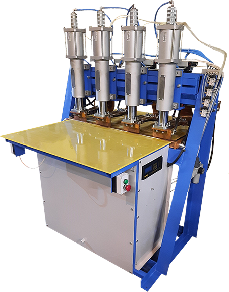
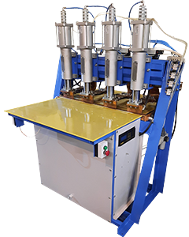
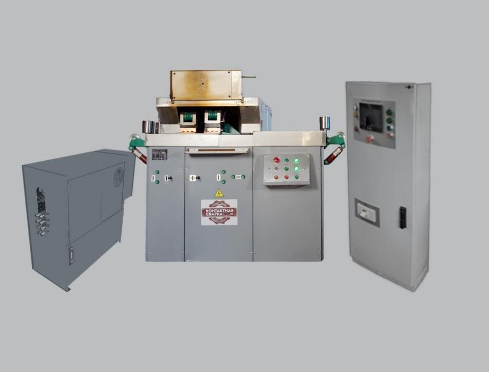
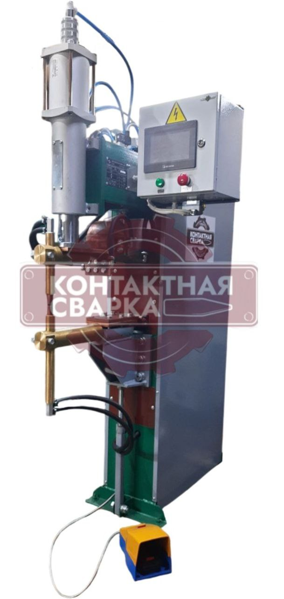
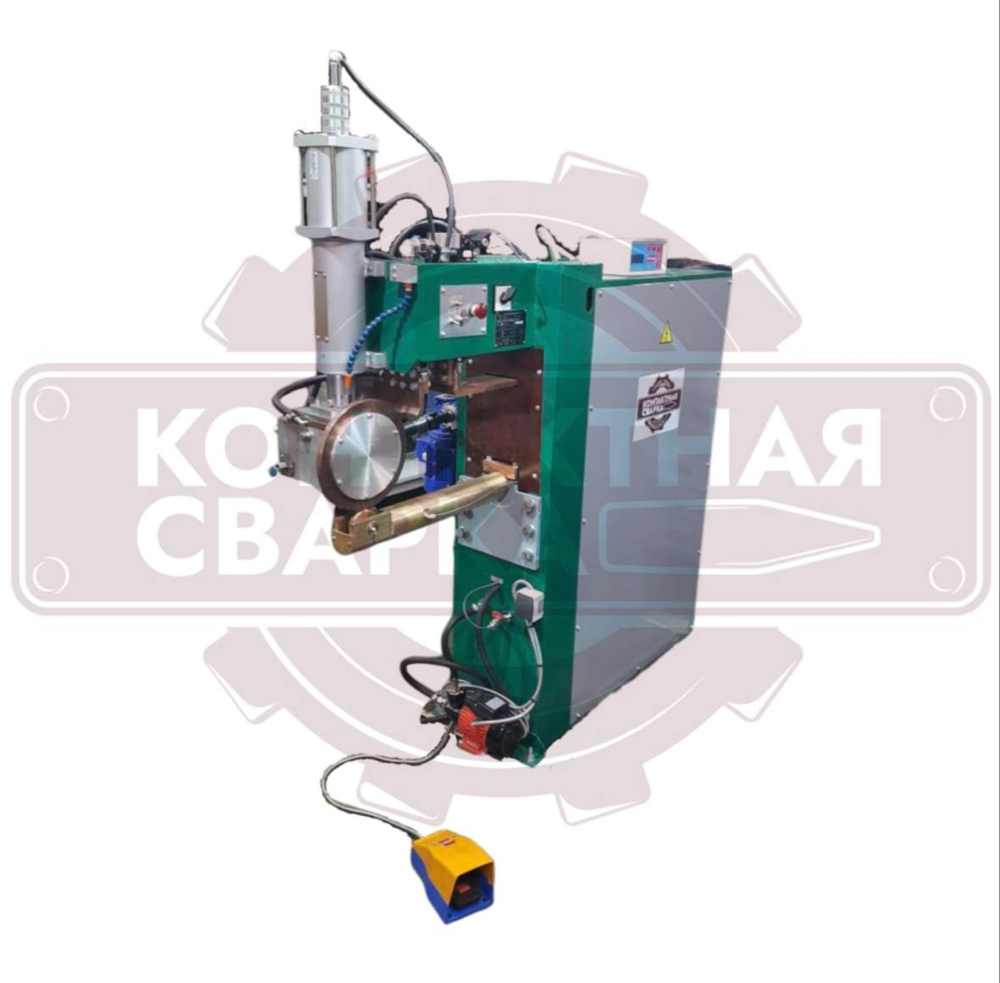
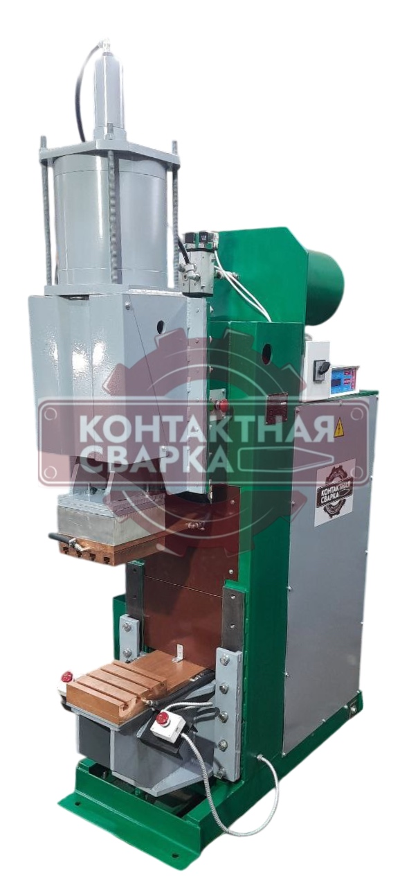

2002
Работаем с 2002 года
Собственное производство в Санкт-Петербурге. Полный цикл от разработки до выпуска готовой машины.
Собственное производство машин контактной сварки с 2002 года. Более 100 моделей в каталоге. Разработка и доработка под ТЗ заказчика. Работаем с предприятиями по всей России и СНГ. Оставьте заявку, подберём машину под вашу задачу!

2002
Собственное производство в Санкт-Петербурге. Полный цикл от разработки до выпуска готовой машины.
100+
Серийные машины контактной сварки. Разработка нестандартных решений под ТЗ заказчика.
30+ лет
Проектируем, модернизируем и реализуем сложные технические решения в области контактной сварки.
7000+
Ежегодно выпускаем более 250 станков для предприятий России и СНГ.
Берём на себя весь цикл: от разбора производственной задачи до обслуживания работающего оборудования.
Производим машины контактной сварки на собственных мощностях в Санкт-Петербурге. Большинство узлов и комплектующих изготавливаем сами. Полный цикл без посредников и наценок.
Наши конструкторы решают сложные технические задачи в области контактной сварки. Проектируем, модернизируем и реализуем решения любой сложности.
Разрабатываем нестандартные машины под ТЗ заказчика. Проектируем решение под ваше производство с нуля.
Оборудование рассчитано на трёхсменный график работы и служит от 7 лет по ГОСТу. Гарантия от 12 месяцев, сервисное сопровождение и поставка запчастей после покупки.
Оборудование соответствует ГОСТу, компания сертифицирована по ISO. Работаем с предприятиями с жёсткими требованиями к поставщикам.
Представители в Москве, Краснодаре, Екатеринбурге, Самаре, Ростове и других регионах. Поставка и обслуживание рядом с вашим предприятием.
Уточним параметры деталей, материал, толщину и требуемую производительность.
Машины для изготовления арматурных каркасов колонн, плит, балок и фундаментов. Контактная сварка обеспечивает повышенную несущую способность каркаса по сравнению с ручной сваркой.
Оборудование для производства арматурных, дорожных и кладочных сеток из проволоки различного диаметра. Машины обеспечивают высокую скорость сварки узлов и снижают количество брака.
Машины для стыковой сварки прутков и проволоки в заготовки нужной длины. Стабильный цикл сварки обеспечивает ровный шов с минимальным выбросом искр.
Оборудование для точечной сварки элементов прямоугольных и круглых воздуховодов. Соединения получаются плотными и герметичными без последующей шлифовки.
Машины для точечной и шовной сварки чаш моек, баков и ёмкостей из стали толщиной от 0,5 мм. Регулировка тока и усилия сохраняет геометрию кромок.
Оборудование для сварки фасадных элементов, экранов, решёток и лёгких металлоконструкций. Точечная и шовная сварка формирует чистый шов на внешних поверхностях.
Машины для сборки узлов кузовов, рам и элементов транспортных средств. Оборудование подбирается под конкретный тип соединения и материал детали.
Для завода спроектировали и изготовили многоэлектродную машину под размеры выпускаемых каркасов. Общий срок поставки составил 14 недель.
Подобрали шовную машину и разработали оснастку под геометрию изделия заказчика. Общий срок поставки составил 12 недель.
Изготовили точечную машину с оснасткой под конкретную деталь и рабочую зону предприятия. Общий срок поставки составил 16 недель.
Поставляем машины контактной сварки по всей России и СНГ. Более 100 моделей в каталоге.
Проектируем и производим нестандартные машины под задачи вашего производства.
Дорабатываем и переоснащаем действующие машины контактной сварки под новые требования.
Гарантийный и послегарантийный ремонт. Выезд специалиста на предприятие заказчика.
Поставляем оригинальные комплектующие для бесперебойной работы вашего оборудования.
Помогаем подобрать оборудование и спроектировать сварочную линию под ваше производство.
Короткая цитата из благодарственного письма о качестве оборудования, соблюдении сроков и работе специалистов.
Здесь можно показать отзыв о нестандартной разработке, запуске машины и сопровождении после поставки.
Третий отзыв подтверждает надёжность оборудования при промышленной эксплуатации и качество сервиса.
Производство, контроль качества и работа с клиентами соответствуют международным требованиям ISO 9001. Оборудование соответствует требованиям ГОСТ.
Опишите задачу, инженер подберёт подходящее оборудование и рассчитает стоимость.
197374, Санкт-Петербург, ул. Савушкина, д. 85
ООО «Контактная сварка ЛИМ»
ИНН 7814730930 · ОГРН 1187847151359
Оставьте контакты в форме ниже. Инженер свяжется с вами и поможет подобрать сварочное оборудование.
Оставьте контакты, инженер свяжется с вами, уточнит задачу и подберёт подходящее оборудование.
Оставьте контакты, инженер свяжется с вами и ответит на все вопросы по оборудованию.
Решения для изготовления каркасов колонн, плит, балок и фундаментов с повторяемым качеством каждого сварного узла.

Многоэлектродные машины и решения под ТЗОборудование для производства арматурных, дорожных и кладочных сеток из проволоки различного диаметра.
Стыковая сварка заготовок нужной длины со стабильным циклом и минимальным выбросом металла.

Машины контактной стыковой сваркиТочечная сварка элементов прямоугольных и круглых воздуховодов для плотных и герметичных соединений.

Точечные машины с адаптированной оснасткойТочечная и шовная сварка чаш моек, баков и ёмкостей из стали толщиной от 0,5 мм.

Шовные и точечные машины для тонкого металлаРешения для фасадных элементов, экранов, решёток и лёгких металлоконструкций с чистым внешним швом.

Точечные, шовные и рельефные машиныОборудование для сборки узлов кузовов, рам и элементов транспортных средств под конкретное соединение и материал.
Пример кейса. Все данные вымышлены.
Заказчик выпускает сборные железобетонные изделия в Московской области. Для нового участка ему требовалась машина, которая сваривает арматурные каркасы по чертежам предприятия. В техническом задании указали диаметр прутка, шаг сварных точек, габариты каркаса и доступное место в цехе.
Отдельно согласовали работу оператора с заготовками и готовым каркасом. От этого зависели компоновка рабочей зоны и расположение органов управления.
Инженеры КСЛИМ спроектировали многоэлектродную машину под размеры каркасов заказчика. Одновременная работа нескольких электродов сокращает число сварочных циклов при изготовлении одного изделия.
Для машины разработали сварочную оснастку и шкаф управления с сохранением рабочих режимов. До отправки оборудование собрали на производстве КСЛИМ и проверили на контрольных заготовках.
Заказчик получил готовую машину с оснасткой и комплектом технической документации. Оборудование подготовили к подключению на производственной площадке.
Общий срок от согласования технического задания до доставки составил 14 недель. Проектирование заняло 3 недели, производство и заводские испытания - 9 недель, подготовка к отправке и доставка - 2 недели.
Реальные фотографии машин КСЛИМ
Пример кейса. Все данные вымышлены.
Предприятие выпускает баки из тонколистовой стали. Для нового изделия требовался ровный и герметичный продольный шов без прожогов и заметной деформации металла.
Вместе с чертежами заказчик передал образцы материала. При подборе машины нужно было учесть длину шва, толщину листа и способ установки заготовки в рабочей зоне.
Для задачи выбрали шовную машину контактной сварки. Инженеры КСЛИМ рассчитали сварочный режим и разработали оснастку, которая удерживает бак в нужном положении во время прохода роликовых электродов.
Первые настройки проверили на образцах заказчика. После этого машину собрали в согласованной комплектации и провели заводские испытания.
Предприятие получило шовную машину, рабочую оснастку и техническую документацию. Настройки, проверенные на образцах материала, внесли в исходную конфигурацию оборудования.
Общий срок поставки составил 12 недель. Согласование решения и оснастки заняло 3 недели, производство и испытания - 7 недель, доставка в Республику Татарстан - 2 недели.
Реальные фотографии машин КСЛИМ
Пример кейса. Все данные вымышлены.
Предприятие сваривает стальные детали сложной формы. Из-за конструкции узла стандартные электроды не доставали до сварных точек, а готовая серийная машина не подходила по размерам рабочей зоны.
Заказчик передал чертежи детали и требования к расположению соединений. По ним нужно было изменить компоновку машины и предусмотреть фиксацию заготовки во время сварки.
КСЛИМ разработал точечную машину с увеличенным вылетом электродов. Под конкретную деталь изготовили оснастку, которая задаёт её положение и оставляет оператору доступ к рабочей зоне.
Компоновку и расположение органов управления согласовали до запуска производства. Собранную машину проверили на заводе вместе с оснасткой.
Заказчик получил машину, рассчитанную под чертежи выпускаемой детали. В поставку вошли оснастка, шкаф управления и техническая документация.
Весь проект занял 16 недель. На проектирование и согласование ушло 4 недели, на производство и заводские испытания - 10 недель, на доставку в Свердловскую область - 2 недели.
Реальные фотографии машин КСЛИМ
В рабочей версии здесь откроется крупный скан действующего сертификата с возможностью рассмотреть номер, срок действия и область сертификации.